Ribbon Tabs
Each of the ribbon tabs holds a set of one or more groups. Each group holds a set of one or more controls that are used to manage screens and functions in a project.
| 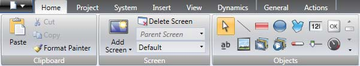 |
The behavior of the ribbon tabs can be configured to be context dependent using the Options button in the File menu.
Double-click on any of the ribbon tab headings to collapse the ribbon area. A double-click on a ribbon tab, when the ribbon is collapsed, brings back the original style. This can also be changed from the context menu of the Quick Access toolbar. Tooltips are displayed for all controls on the ribbon tabs. The tooltip offers a brief description of the selected control.
iX Developer contains the following ribbon tabs:
Related information |
|---|
Home Ribbon Tab
The Home ribbon tab contains groups of controls for editing screens in the project:
Clipboard Group
The Clipboard group contains the paste, cut, copy and format painter controls.
Cut
Cuts the selection to the clipboard. Also available from the keyboard with [Ctrl] + [X] or from the context menu.
Copy
Copies the selection to the clipboard. Also available from the keyboard with [Ctrl] + [C] or from the context menu.
Paste
Copies the clipboard to the current screen. Also available from the keyboard with [Ctrl] + [V] or from the context menu.
Note
Text from a compatible source, e.g. clipboard text, will be converted to a Text Box object when pasted into a screen.
Format Painter
The Format Painter control is used to copy formatting from one object to another. This is useful when creating a uniform appearance for objects.
To apply formatting to another object:
Click on an object with the desired format and font properties. Click on the Format Painter control. The mouse pointer changes to a paintbrush.
Click on the object to format. The format properties from the first object is applied to the selected object.
Format and font properties can be copied between objects of different types, for example from a rectangle to an HMI control.
Note
Modification to an object using the Other Colors control is not applied when using the Format Painter.
Related information |
|---|
Screen Group
The Screen control group contains the add screen, background screen and delete screen. Screens can also be added and deleted from other controls, such as the Navigation Manager and the context menu of the Project Explorer.
| 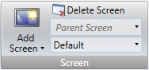 |
Add Screen
The Add Screen command creates a new empty screen that opens for editing. Clicking the lower part of the Add Screen button shows a selection of screen templates that are available for selection.
Delete Screen
The Delete Screen command removes the current screen from the project, and also disconnects any associations from other screens to the removed screen.
Note
A deleted screen cannot be restored with the Undo command.
Background Screen
Any screen can be used as background to the current screen.
All objects in a background screen will work as designed in the project application.
Objects in a background screen must be edited in the screen that they reside in. Objects in a background screen will be dimmed in the current screen in the development environment.
Related information |
|---|
Objects Group
The Objects control group contains static and dynamic objects that can be added to a screen.
Related information |
|---|
Object Variations
For many of the objects it is possible to apply a preset style, using the Object Variations feature. For the Button object and the Circular Meter object there is a large number of different styles available as default, whereas for most other objects it is possible to save user-defined styles.
To display the Object Variations menu, click on one of the objects in the Objects menu. The Object Variations menu appears to the right of the Objects menu, provided that there are some styles available for the selected object.
To add user-defined styles in the Object Variations menu:
Select an object to start from.
Modify the object, using the tools under the Home ribbon tab or the Property Grid.
Select the designed object and right-click to open the context menu.
Select Save Variations to save the modification.
| 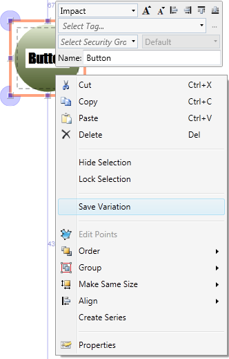 |
The new variation will appear in the Object Variations menu when clicking on the object type it originated from.
Objects supporting Save Variation | |||
|---|---|---|---|
Rectangle | Ellipse | Analog Numeric | Button |
Text | Linear Meter | Slider | Circular Meter |
Trend Viewer | Chart | Action Menu | Animated Label |
Digital Clock | Alarm Viewer | - | - |
The object properties are shown in the Property Grid. When saving the variation the following properties are saved (when applicable):
Variations saved (where applicable) | |||
|---|---|---|---|
Color | Font | Rotation | Size |
Visibility | Security groups required | Audit trail description | Delay Mouse/ Touch Input |
Visibility on access denied | Opacity | Horizontal and vertical alignment | Picture horizontal and vertical alignment |
In addition to the general properties listed above, a number of object specific properties are saved:
Object | Property |
|---|---|
Action Menu Object | View type Orientation |
Alarm Viewer Object | Button position |
Analog Numeric Object | Limit number of characters Number of characters Number of decimals Prefix Suffix |
Animated Label Object | Animation direction View type |
Chart Object | Chart type 3D view Show header Show legend Show scale |
Digital Clock Object | Display format Show seconds |
Linear Meter Object | Orientation Scale Transparency |
Slider Object | Orientation Scale Transparency |
Text Object | Horizontal alignment Vertical alignment |
Trend Viewer Object | Major value ticks Minor value ticks |
Rectangle | Radius Effects |
Note
Features only supported in PC environment might not work on other platforms.
Related information |
|---|
Font Group
All fonts available in the development PC are available for selection when designing the project. All fonts used in the project are included when downloading the project to the target.
Note
For PC and iX TxC, non-standard fonts are not transferred or installed to the target. Install non-standard fonts manually on the target.
Note
The number of fonts needs to be considered when calculating the total size of a project.
Note
The default font Tahoma does not support Chinese characters in HMI panel projects in runtime. The font has to be changed to a font that supports Chinese characters, e.g. MS Song. Keep in mind that some fonts require a lot of project memory.
The Font group is used to change text style. The text style is defined for the currently selected object.
| 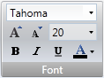 |
Font and Font Size
Select font from the drop-down list. Use the increase/decrease font size buttons or set a specific font size.
Note
Objects, for which Auto Stretch Font is selected, will not be affected by these settings. The font size will be autosized when resizing the object height.
Style and Color
An italic, underlined or bold style can be selected for the text. The style stays regular if all the boxes are left unchecked. Use the Font Color drop-down list to set the color of the text.
Format Group
The Format group controls the color and position of a selected object. Predefined quick styles offer selection of uniform appearance for different objects. Selection of multiple objects makes it possible to easily affect more than one object at the same time.
| 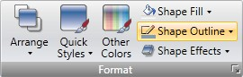 |
Clicking the small arrow in the lower right corner of the Format group displays the shadow, fill and outline properties with a number of additional format settings.
It is possible to use the Format Painter (in the Clipboard group) to copy color and font properties from one object and paste it to another object.
Related information |
|---|
Arrange
The Arrange control can be used to order, group, resize, align and distribute screen objects.
| 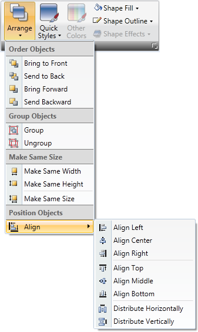 |
Order Objects
The commands in the Order Objects group are used to send objects to the front or back of each other.
Command | Description |
|---|---|
Bring to Front | Positions the selected object on top of any overlapping objects |
Send to Back | Positions the selected object behind any overlapping objects |
Bring Forward | Makes the selected object swap place with the nearest overlapping object |
Send Backward | Makes the selected object swap place with the nearest obscured object |
Note
The Object Browser offers an easy way of arranging objects to the front or back of each other.
Related information |
|---|
Group Objects
The Group Objects commands are used to manage selections of multiple objects. A grouped object is moved and treated as one object with respect to formatting and resizing, and can also be stored in the Component Library for reuse.
Any selection of objects on the screen can be grouped.
When multiple objects are selected, one object is the primary selection. This is shown with an orange frame, while other objects in the group have blue frames. Click on any object in the group to change this to the primary selection.
A grouped object can be resolved into individual objects using the Ungroup command. A property that was given to the group will be kept by each of the object, provided that the property is applicable.
Make Same Size
The Make Same Size commands are used to adjust the size of a group of selected objects. The size will be determined by the primary selection (the guide object).
Position Objects
The Position Objects commands can be used to align and distribute multiple objects neatly. Objects can be aligned vertically and horizontally using the primary selection for the group as guide object. Objects can be aligned with respect to their center (center/ middle) or their edges (top/bottom/right/left).
Related information |
|---|
Quick Styles
The Quick Styles control contains a number of preset visual object color schemes that can be applied to screen objects.
The predefined graphical styles make it possible to achieve a uniform appearance on items like meters and trend viewers. An object that has a style applied can be further customized, for example with font settings.
It is also possible to customize the predefined styles to styles of your own preference. The quick styles are not specific to the current project. They will be available for all iX Developer projects.
Note
Controls in the Style group on the General tab can be used to reshape objects such as meter, slider and trend viewer to predefined styles. These styles are not the same as the quick styles.
Related information |
|---|
Other Colors
Color settings for special properties of an object, for example scale color for a meter or out-of-range validation of an analog numeric object, are available from the Other Colors control.
Shape Fill
The Shape Fill control is used to alter the fill color and gradient of the selected shape. A preview of the colors in the Shape Fill selection window is displayed directly on the object on the screen as the pointer hovers over the different colors.
Shape Outline
The Shape Outline control is used to alter the outline color and outline width of the selected shape.
Shape Effects
Shape Effects makes it possible to add bevel style and shadow effects.
Note
Bevel in combination with fill color “no fill” is only supported for iX TxC and PC targets. The bevel will not be visible in runtime on other HMI panel targets.
Tag/Security Group
Connection to controller tags as well as object access (based on security groups) and visibility are configured from the Tag/Security group.
Tag/Security group without and with selections.
Parameter | Description |
|---|---|
Select Tag | Connection to a tag from the tags configuration page. Tags may also be added directly, but will be remain internal until connected to a controller tag. Click ... to configure expressions. |
Select Security Groups | Allows limiting access of the object based on security groups. If left empty, the object can be accessed by anyone. |
Select Visibility | Configuration of visibility: Default: The visibility specified on the General tab of the Security Manager is used Disabled: The object is disabled for users with insufficient access rights Hidden: The object is invisible for users with insufficient access rights Normal: The object looks normal also for users with insufficient access rights |
Note
When access rights are not fulfilled, showing an access denied message or opening a login dialog can be configured using the security function.
Related information |
|---|
Name Group
All objects and screens are automatically named when they are created. The name is displayed and can be edited in the Name group. Screen names can also be edited in the Project Explorer.
The name of an object isa symbolic identifier and is an alphanumeric string, beginning with a letter. Name strings can contain letters (a-z, A-Z), numbers (0-9), and underscore (‘_’) characters.
| 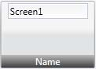 |
Note
Renaming objects and screens included in scripts will cause the scripts not to function.
Related information |
|---|
Design Language Group
Current Language
Current language is the language that is being used at the particular moment that the project is designed. If multiple languages are not used in the project, only Default is available.
Project Ribbon Tab
The Project ribbon tab contains a number of project related functions, divided into the following groups:
Run Group
The Run group enables validation, rebuilding, simulation and debugging of the project.
| 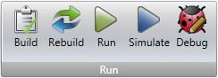 |
Build
The build control validates the script code and compiles the current project.
Recompiling the project using the Build control will result in only the changes being made to project to be recompiled. To fully recompile the project, instead use the Rebuild control.
Rebuild
The rebuild control validates the script code and recompiles the complete project.
Run
A test of the project can be executed directly on the PC. Clicking Run will perform a validation and start a simulation, if the project can be built. If errors are found during validation, an error message will be displayed.
During simulation, the project will communicate directly with the configured controllers, provided that the controllers are correctly connected to the development environment.
If there are unused tags in the project, the Run, Build, and Rebuild commands will result in a notification about this. The CheckForUnusedTags function can be disabled or enabled under Options in the File menu.
Note
If project build fails, check that the absolute path to the project, including its components, does not exceed 260 characters.
Note
Projects must be stored on the local hard drive for iX Developer to be able to run or simulate them.
Simulate
It is also possible to test and run the application on the development PC without connection to the selected controller, by clicking Simulate. If the project is valid, the simulation is started.
Debug
The Debug command will allow the user to debug scripts in a real c# debugger with the possibility to set breakpoints etc. User preferences for the script debugger may be entered under Options, available from the File menu.
Note
Debugging of a CE project requires Visual Studio 2008 SP1.
Related information |
|---|
Transfer Group
The Transfer group enables download to HMI panel, upload database and export to folder functions.
Note
Time zone, region or daylight saving settings will not be transferred if these settings have been changed manually in the panel.
Download
The Download control sends the project to an HMI panel or a PC with an iX Runtime installation, in the network environment.
| 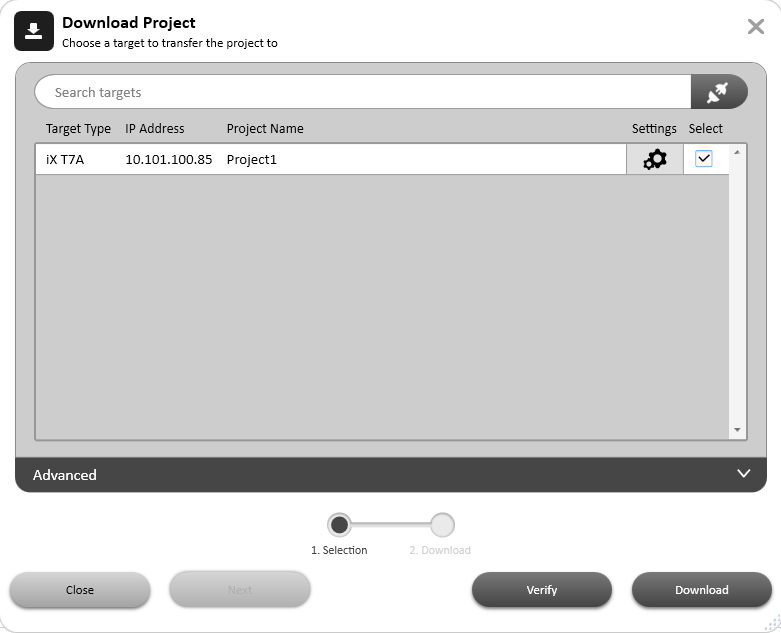 |
Do the following:
Choose a target type to transfer the project to.
Start the project transfer.
Click the Download all source code (for later upload) check box to compress the project and save it as a ZIP file on target.
Click the Password protected check box and enter a password to protect the ZIP file.
Click the Copy downloaded project to Memory Card check box to copy the downloaded project and the targets IP settings to the memory card. When project is copied to memory card, it can be used for restoring the project.
The verify function enables the user to check if a target platform configuration is identical to the project configuration.
Click the cogwheel icon to the right of the project name to show the dialog below. Here the IP settings of the connected port can be updated.
| 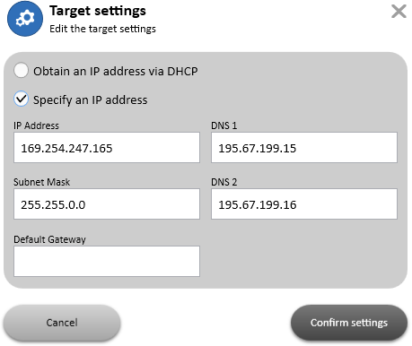 |
Note
An automatic check is done for mismatch between the iX Developer version and the target system versions. All version parameters are considered. If the target is indicated as being incompatible with the version of the iX Developer that hosts the project, please update the target with the latest iX Runtime and system program versions.
The log can be shown/hidden by clicking on the expand collapse button on the transfer client. Each log entry will be colored based on the type of the log entry. For example, green (for success messages), red (for failure/error/exception messages) or black (for all other type of messages). When an exception happens or when the download fails, the log status will be a link. Click on the link to automatically expand the log section and point to the first exception occurred. If the transfer fails, click the retry button to retry the project transfer.
| 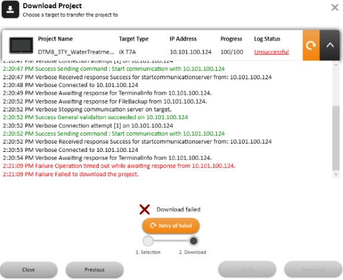 |
If the target for the download contains newer files or files that don’t exist in the project, a dialog will appear prompting for which files to be kept, overwritten or deleted.
| 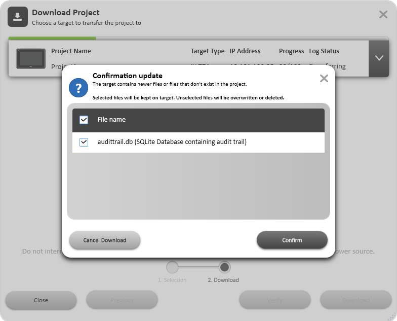 |
If the same project is to be downloaded to a panel again, the original datalogger in the panel will be replaced if any settings have been changed in the datalogger since the last download. A single project can be downloaded to many panels at the same time.
Note
Downloading a project built by an earlier version of iX Developer (downgrading) might result in data loss.
Once a transfer is completed, the log for the transfer will by default be saved in the product installation folder under the 'Transfer Logs' folder. There will be one log file per device per transfer. The name of the file will be in the format: [TimeStamp]_[IPAddress]_[TargetType]_[TransferType].log
Downloading a Project to an HMI panel or a PC with an iX Runtime installation
Connect the HMI panel to the development PC via an Ethernet connection.
Click Download.
The download dialog opens and all panels connected in the network are listed with information about IP address and panel type. Select the panel to download to in the list.
Check that the IP address is correct and click Download.
Optional: Click the Include compressed project check box to compress the project and save it as a ZIP file.
Optional: Click the Password protected check box and enter a password to protect the ZIP file.
Optional: Click the Copy downloaded project to Memory card check box to enable SD card backup of HMI panel project and settings.
The panel responds to a download request by stopping any current project. The panel displays that it is ready for project download. When the download is completed, the new project automatically starts running.
The project folder is located at the following path. Only for PC targets!
%public%\Documents\Beijer Electronics AB\iX Developer Runtime\Project. The panel settings can be controlled from the Service menu in the panel.
Note
It is necessary to open TCP port 9999 and UDP port 9999 in the firewall for the runtime PC application.
Note
Do not attempt to use the <emphasis xmlns="http://docbook.org/ns/docbook" role="strong">Download</emphasis> command if a project opened with the .exe file is open. This might fail to close the project and the transfer will not be completed.
Note
If Chinese or Korean languages are to be used in the HMI panel, then firewalls in Windows must be configured to allow TransferClient.exe full access on all ports, otherwise project transfer might fail.
Related information |
|---|
Downloading a Project to an HMI panel or a PC with an iX Runtime installation Using FTP
A project can be loaded to the panel via FTP. To be able to load a project remotely an external storage device (SD card or USB stick) must be attached, and a configuration file named ProjectCopy.config must be present in the root directory of the storage device.
Set up the configuration file as follows. Use # for parameters to be ignored.
Parameter | Description |
|---|---|
automatic | the download of the project automatically starts, without any dialogs, when a project file is loaded to the storage device and the panel is rebooted |
path "\Storage Card\Project3" | the path to the project, if multiple projects are stored on the storage device. SD cards use the path \StorageCard\ and devices attached to USB use \HardDisk\ |
applyipsettings | applies saved IP settings |
deletesource | deletes the source file from the storage device after the download |
deleteconfigfile | deletes the configuration file after the download. If the configuration file is left on the storage device it is initiated each time the panel is rebooted. |
Note
This is only supported in the latest released images.
Example:
In the following example, without displaying any dialogs, the project found in the folder Project_5 located on the USB stick is loaded, the project is deleted from the USB stick, and the configuration file is deleted. The IP-settings are not updated.
automatic
path "\HardDisk\Project_5"
#applyipsettings
deletesource
deleteconfigfile
Upload Database
The Upload Database command will collect the database from an HMI panel in the network environment to a file on the development PC. The panel will pause during the upload, and will be started automatically afterwards.
The database may only be collected from a panel running the same project (i.e. a project with the same name and of the same size) as the current iX Developer project.
Collecting a Database from an HMI panel
Connect the HMI panel to the development PC via an Ethernet connection.
Click Upload Database.
The Upload Database dialog opens and all panels connected in the network are listed with information about IP address and panel type. Select the panel to collect from in the list.
Check that the IP address is correct and click Back Up.
Select location of the saved database.
Export
Exports the project to a folder which is selected by the user.
When exporting the project, the user might be prompted whether or not the panel IP settings should be set. If yes, the Target Settings dialog is opened.
The dialog will show IP settings for each Ethernet port on the target panel. Assigning IP settings is not supported on PC or iX TxC.
| 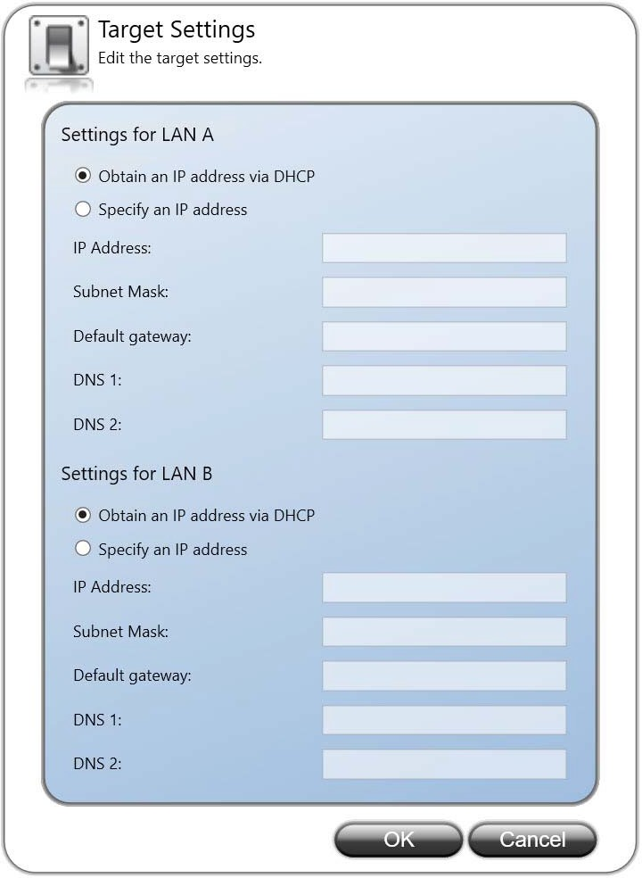 |
Exporting a Project to an HMI panel or a PC with iX Runtime Installation
A project can be exported to an HMI panel or a PC with an iX Runtime installation via the Export command. The project can be exported to a USB stick or, on the condition that a network connection is configured, directly to a folder in the runtime PC.
The project in the runtime PC is started by running the .exe file located in the project folder.
There will also be a TransferClient.exe file, which is a standalone application for downloading the exported project to a target. Executing the TransferClient.exe file will open the Download dialog. It is possible to view a log for the export by clicking the Log button on the Download dialog.
Note
It is not recommended to handle further project transfers from a PC already used as a target for export. If additional transfers are to be done, then keep using the same export method for all.
Related information |
|---|
Starting an iX Runtime project on a PC
The different methods of transfer will have an impact on how the projects are started and stopped in the runtime PC. It is recommended to keep to one of the selected transfer methods to avoid problems.
When a project has been transferred to a PC using the Download command, the project normally starts automatically when the computer is started. However if the project is stopped and needs to be restarted, this should be done via the Target Control Service in Windows. This will ensure that the status of the project is fully recognized for all functions that depend on this.
To manually open or close a project in iX Runtime for a PC target, go to the Services tab in Windows Task Manager. Click on the item Target Control Service and the available commands are shown on the top left of the list.
Double-clicking the Target Control Service item opens a dialog box that displays Service Status along with other additional settings. Start or stop the project from here.
A running project will then be visible when entering the iX Developer Download dialog.
Note
If a runtime PC project is started using the project .exe file, the Target Control Service will not recognize that the project is running. This will lead to problems using the iX Developer transfer functions.
A project that has been transferred using the Export command must be started by opening the .exe-file in the project folder. A running project is not detected by any of the transfer or service status dialogs in the runtime PC. This means that it is up to the user to keep track of the status.
Project Group
The project target, as well as name and title, are available for editing in the Project Group. The project title is displayed in the title bar in runtime by default. Leaving the title empty displays the screen name/screen title only in runtime.
The Project Group also contains the Back Up Project command, a Project Settings control and the possibility to refer to other assemblies using the Referenced Assemblies control.
| 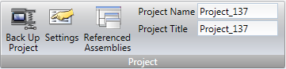 |
Related information |
|---|
Back Up Project
The project source files can be compressed into a Zip file using the Back Up Project command. The Zip file can be saved to a USB stick or, on the condition that a network connection is configured, directly to a folder in the runtime PC.
| 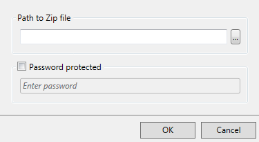 |
Parameter | Description |
|---|---|
Path to Zip file | Browse to the location to save the Zip file. |
Password protected | Optional password protection of the Zip file. |
Related information |
|---|
Settings
Properties such as application behavior in runtime, system font, and settings for mouse and keyboard can be edited by clicking Settings in the Project group.
Database
| 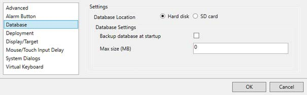 |
iX Developer projects use SQLite databases. Upgraded/converted projects will by default be changed to SQLite. When converting from SQL CE to SQLite, some custom queries might need to be updated manually.
Parameter | Description |
|---|---|
Back up database at startup | When using this option a backup is created at startup if the integrity check of the database succeeds. If the integrity check fails the previous backup is used. The drawback is that the databases use twice the space on disk and the startup time gets longer. If there is no backup available and the database has become corrupt, then the corrupt database is replaced by a new empty database. |
Max size (MB) | When the database exceeds this size, the system tag Database Max Size Exceeded will be set. By pointing the mouse at the lower right part of the desktop area, a window will popup and show the memory usage of different activities. This will give you a hint about what would bea suitable value for the Max size (MB) setting. |
Database Location | This setting can be used to determine whether the Database(s) should be stored and actively read/written against on the Hard disk of the panel or the SD Card. If the location is changed in the settings the Databases(s) will also be moved from the previous location on the panel to the newly chosen location ensuring the pre-existing history/data in the Database(s) remains intact. For more information go to Memory Card. |
Deployment
| 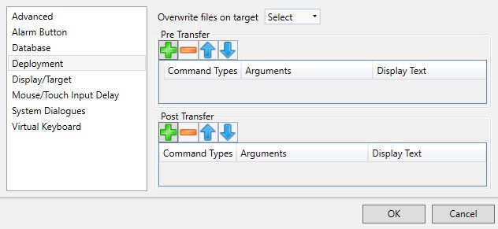 |
Parameter | Description |
|---|---|
Overwrite Files on Target | This setting can be used to determine the default behavior when transferring projects and the transfer finds critical files already present on the target. |
Pre Transfer | Add commands to be executed before the file transfer. Only available for standard PC targets. |
Post Transfer | Add commands to be executed after the file transfer. Only available for standard PC targets. |
Related information |
|---|
Pre Transfer
The following commands can be executed before the file transfer:
Command | Description |
|---|---|
Reboot | Reboots the target. Possible arguments: True and False. Using True, the target tries to start any project present. The argument False, or no argument, prevents the target from starting the project automatically. |
Wait | Pauses the execution of the commands. This can be useful if the user runs commands that takes time for the target to recover from. Possible arguments: a number, indicating how many whole seconds to wait. |
Run | Starts any given process. The first argument must always be the path to the executable to be run. Keep it inside quotes if it contains spaces. Other arguments: /p: or -p: are parameters for the process to start. The parameters must be inside quotes and separated by spaces. |
Command | Description |
|---|---|
/noshell or -noshell means that the process should be run outside of the command shell. /wd: or -wd: means working directory for the process to run. If left empty defaults to active projects directory. The parameters must be inside quotes. /wait: or -wait: means that the TargetControlService should wait until the process has exited before continuing. If the process does not exit by itself, this argument should be left out. |
It is possible to use the following macros in conjunction with the Run commands:
Macro | Description |
|---|---|
$projectpath$ | Replaced by target project folder. If the user has downloaded an executable together with the project and wants to run it, this macro represents the destination folder. Example: "$projectpath$\dbbackup.exe" /p:"backup.bak" -noshell -wait This runs the dbbackup.exe with the startup argument backup.bak, it runs outside the command shell due to -noshell, and the transfer does not continue until the process has exited due to -wait. |
$startproject$ | Registers and starts the project. The transfer continues. |
$finished$ | Tells the system that the transfer is finished and closes connections. The project does not start. Should only be used in Post Transfer. |
Note
Only available for iX TxC and PC targets.
Post Transfer
The same commands and macros as for the Pre Transfer can be used, but are executed after the file transfer.
Note
Only available for PC.
Related information |
|---|
Display/Target
| 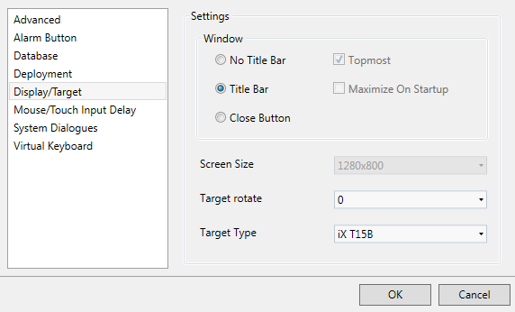 |
Parameter | Description | ||||||||||||||||||||||||||||||||||||||||||||||||
|---|---|---|---|---|---|---|---|---|---|---|---|---|---|---|---|---|---|---|---|---|---|---|---|---|---|---|---|---|---|---|---|---|---|---|---|---|---|---|---|---|---|---|---|---|---|---|---|---|---|
No Title Bar [a] | Displays the project without title bar in runtime. | ||||||||||||||||||||||||||||||||||||||||||||||||
Title Bar | Displays the project with its title and a set of minimize, maximize and close buttons in the title bar. | ||||||||||||||||||||||||||||||||||||||||||||||||
Close Button | Displays the project with its title and a close button in the title bar. | ||||||||||||||||||||||||||||||||||||||||||||||||
Topmost | Makes the project the topmost application in runtime. Only available for iX TxC and PC targets. | ||||||||||||||||||||||||||||||||||||||||||||||||
Maximize On Startup | Makes the project maximized in runtime. Only available for PC targets. | ||||||||||||||||||||||||||||||||||||||||||||||||
Screen Size | Screen resolution. Only available for PC targets. | ||||||||||||||||||||||||||||||||||||||||||||||||
Use wide scrollbars | Enlarges scroll bars on the panel to make them easier to operate with a touch screen. This is a global setting which affects all applications on the panel. Only available on iX TxC targets. | ||||||||||||||||||||||||||||||||||||||||||||||||
Panel Rotate | Displays selected rotation. It is possible to change the rotation of the panel and panel content by 0, 90, 180 or 270 degrees. Not supported on panels with 4” screens or on iX TxC. | ||||||||||||||||||||||||||||||||||||||||||||||||
Panel Type | Displays selected target. It is possible to select another target. | ||||||||||||||||||||||||||||||||||||||||||||||||
[a] No Title Bar can not be used for popup screens. | |||||||||||||||||||||||||||||||||||||||||||||||||
Related information |
|---|
Changing Project Target
When changing to another target, you can select to automatically resize objects to the new target size. Different scale factors are used horizontally and vertically, to optimize conversion to and from wide screen targets. In this case, the aspect ratio of objects changes.
The serial ports settings will also be reset to default values if ports differ in possible configuration.
Note
An object might be wrongly positioned after conversion. When this happens you must change the position of the object manually.
The following items are resized with the same factor when having selected automatic resizing:
Item | |||||||||||||||||||||||||||||||||||||||||||||||||
|---|---|---|---|---|---|---|---|---|---|---|---|---|---|---|---|---|---|---|---|---|---|---|---|---|---|---|---|---|---|---|---|---|---|---|---|---|---|---|---|---|---|---|---|---|---|---|---|---|---|
Graphical objects | |||||||||||||||||||||||||||||||||||||||||||||||||
Popup screens | |||||||||||||||||||||||||||||||||||||||||||||||||
Font[a] | |||||||||||||||||||||||||||||||||||||||||||||||||
Dynamics size and move | |||||||||||||||||||||||||||||||||||||||||||||||||
[a] A minimum scaled font of 10 pixels ensures readability in the smaller HMI panels. | |||||||||||||||||||||||||||||||||||||||||||||||||
Not all objects and styles are supported for all project targets. When changing to another project target, objects and styles that are not supported in the new target are deleted and are possible to restore. Removed objects are logged, and displayed in a window after the transformation. The log may be saved to file. Build files are always cleaned and project saved after transformation.
Note
Changing back to the previous target does not restore removed objects.
Mouse/Touch Input Delay
It is possible to configure delay of mouse and touch screen input in runtime. The delay used is either global and affects all objects for which Delay Mouse/Touch Input is selected, but with no specific delay configured, or can be set individually on each object. The Property grid is used to enable and configure delay of mouse and touch screen input for individual objects.
To revert to the global setting, enter 0 as Delay Period.
| 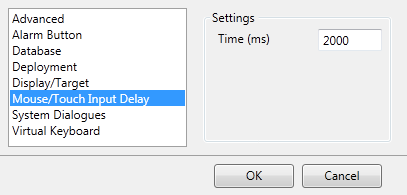 |
Related information |
|---|
Advanced
Parameter | Description |
|---|---|
Set default value on all new screens to cache | When this is checked, all the new screens created in the project will have the value for Cached (under general settings for the screen) as checked by default. When this is unchecked, all the new screens will have the Cached option set to false. As before, this is not applicable to start screen and popup screens. Start screen will always be cache enabled and popup screens will always be cache disabled. |
Set all to cache | Clicking this button will set the value of Cached for all the existing screens to true (except the start screen and popup screens). |
Remove all cache | Clicking this button will set the value of Cached for all the existing screens to false (except the start screen and popup screens). |
Enable FTP friendly names | Clicking the Enable FTP Friendly Names checkbox you will get report names of the following format (without quotes): "ReportTemplateName_yyyy-mm-dd_hh:ss.extension". All spaces ( ) are replaced with underscores (_) and all dots (.) (except for the dot that signifies the extension) are replaced with dashes (-). If you leave the checkbox unchecked the names will be generated in the same format as before. |
Memory management | Set garbage collection mode (Workstation and Server) for the runtime project. By default the workstation mode will be selected. Workstation mode is suitable for single core/processor targets. Server mode is suitable for multi core/processor targets. For a single core processor, even if the Server mode is selected, in effect the target will be run with Workstation mode for garbage collection. |
Parameter | Description |
|---|---|
Enable Watch Dog | If enabled, a timer will be started in the panel when starting a project. If the project does not start within the configured time, it tries to restart the project in the panel. It will retry for a maximum of 3 times. The default value for the configured time is 120 seconds. |
OPC UA Structured Tags | Enable/disable OPC UA Structured Tags in a project via this setting. This is a limited functionality feature and the link to the document describing limitations can be found below the setting. By default, OPC UA Structured Tags will be disabled for the project. |
Note
Memory management option is only available for iX TxC panels and PC targets.
Enable FTP Friendly Names
The Enable FTP Friendly Names checkbox controls the names of the following file producing actions:
Any reports generated through the Generate Report action. The default names for reports are :ReportTemplateName yyyy.mm.dd hh:mm:ss.extension. The extension is either .xls or .pdf (based on what is supported).
Any exported data logger files generated through the Database Export action with a Data logger selected. The subfolder name "Data Loggers" will be renamed to "Data_Loggers"
Any exported Alarm Server files generated through the Database Export action with an Alarm Server selected. The subfolder name "Alarm Server" will be renamed to "Alarm_Server"
Note
The same rules will apply for exporting Recipes, Audit Trails and performing a Print Screen.
System Dialogs
| 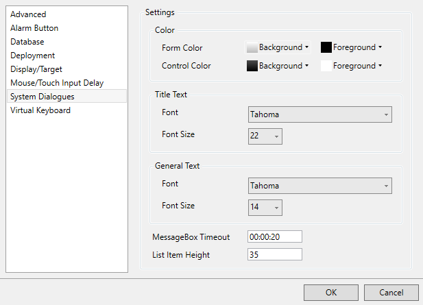 |
Parameter | Description |
|---|---|
Font | Select a system font that is used as the default font. |
Font Size | Use the increase/decrease font size buttons or seta specific default font size. |
Virtual Keyboard
| 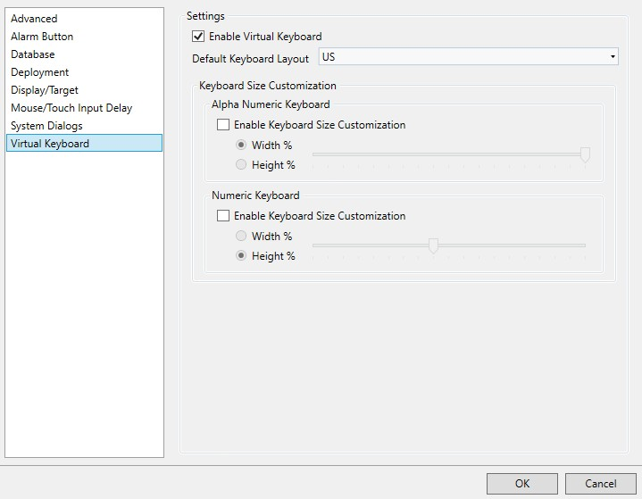 |
Parameter | Description | ||||||||||||||||||||||||||||||||||||||||||||||||
|---|---|---|---|---|---|---|---|---|---|---|---|---|---|---|---|---|---|---|---|---|---|---|---|---|---|---|---|---|---|---|---|---|---|---|---|---|---|---|---|---|---|---|---|---|---|---|---|---|---|
Enable Virtual Keyboard | Select whether a virtual keyboard is to be displayed when alphanumerical input is needed. | ||||||||||||||||||||||||||||||||||||||||||||||||
Keyboard Layout | The following layouts are available for the virtual keyboard: Arabic, French, German, Hebrew, Italian, Korean, Russian, Simplified Chinese (Compact), Simplified Chinese, Spanish, Swedish, Traditional Chinese, US | ||||||||||||||||||||||||||||||||||||||||||||||||
Keyboard Size Customization | It is possible to customize the size of both the alphanumeric keyboard and the numeric keyboard. To do so, check the enable size customization checkbox to unlock the settings. Then choose if scaling should be based on the height or width of the target resolution. Finally, use the slider to select what percentage of the target height/width the keyboard should be.[a] | ||||||||||||||||||||||||||||||||||||||||||||||||
[a] It is recommended to test the keyboard size by simulating the project before downloading to target, to make sure that the result is as expected. Please verify that the PC's DPI settings are at 100% for more accurate scaling. | |||||||||||||||||||||||||||||||||||||||||||||||||
The virtual keyboard that is displayed in runtime depends on settings made for the Multiple Languages function. If only the default language is used, the project settings (above) are used.
Note
Asian keyboard layouts do not work in PC projects.
Related information |
|---|
Referenced Assemblies
The Referenced Assemblies command makes it possible to refer to your own or third-party .Net assemblies (.dll). Their methods and properties are made available when scripting and are included by the name completion function, in the same way as for built-in components.
Click on Referenced Assemblies.
Click Add.
Browse to the desired dll file in your PC environment and click Open. The methods and properties of the added dll file are now available for scripting.
| 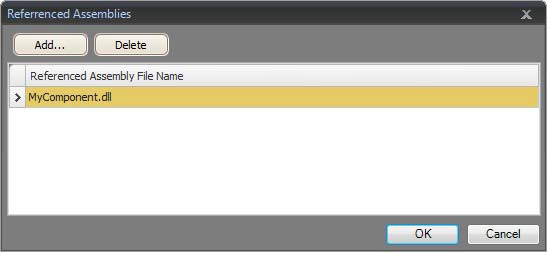 |
When referencing your own third-party assembly (.dll file) make sure not to have two files with the same fully qualified assembly name in the same folder:
Example:
You have the files "Iocomp.Instrumentation.CF2005.Ultra.dll" and "Iocomp.Instrumentation.CF2005.Ultra.WindowsCE.asmmeta.dll" in the same folder. Both have the same fully qualified assembly name (but different file names). Trying to add a control from the first assembly seems to work. However when the application uses namespaces in the XAML to locate the correct assembly it picks one of them, and it might be either of them. If it is the wrong assembly you get a message saying that there is an error in the XAML.
Note
When importing third-party assemblies for use on a X2 pro, it is important that the supplier supports running the code on Windows Embedded Compact 2013 and that the assembly targets compact framework 3.5.
Transfer Client CLI
The Transfer Client CLI is a cross platform tool used for transferring a project to one or many panels. This tool is distributed along with iX Developer.
Prerequisites
.Net 6.0 Runtime or greater is required to run the Transfer Client CLI.
The runtime can be downloaded from https://dotnet.microsoft.com/en-us/download
Usage
The Transfer Client CLI is included when an iX Developer project is exported. If the project will be transferred from a different machine than the one it was exported on, the entire exported project folder needs to be copied to this machine.
Open a command prompt - Windows Command shell, PowerShell, Bash and so on - in the folder with the exported project.
Type in the following command: dotnet TransferClientCLI.dll [Argument]
Argument | Description |
|---|---|
-h or --help | Displays the information on the usage of the application. |
[ipAddress1] [ipAddress2] ... [ipAddressN] | The list of IP addresses the projects should be transferred to. |
Example:
Display the help:
dotnet TransferClientCLI.dll --help
Transfer the project to a panel with IP address 192.168.98.1:
dotnet TransferClientCLI.dll 192.168.98.1
Transfer the project to multiple panels with IP addresses 192.168.98.25, 192.168.98.50:
dotnet TransferClientCLI.dll 192.168.98.25 192.168.98.50
The transfer logs are stored in a folder called TransferLogs, found within the export folder.
Limitations
This is a non-interactive command line tool for Transfer Client. Hence there will be no confirmation dialogs or warning dialogs during the transfer. All files and databases will be overwritten during transfer.
System Ribbon Tab
The System ribbon tab controls system settings. These settings are divided into the following groups:
Date, Time, and Region Group
National settings are made in the Date, Time and Region group.
| 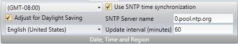 |
Select time zone, whether to adjust for daylight saving, and region. If no time zone is selected, the time zone that has been selected for the panel or PC will be retained.
Note
After changing the Adjust for Daylight Saving setting, the HMI panel must reboot for the changes to take effect.
If EnableTimeSync is set to true SNTP time synchronization will be enabled by default on creation of new projects. The default server name used is time.windows.com.
| 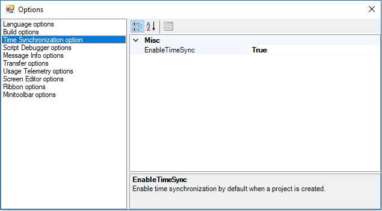 |
Note
It is recommended to use SNTP time synchronization with 'time.windows.com' server while using cloud compatible panels. A build warning for projects created against cloud compatible panels will be generated if SNTP time sync is not enabled or if it is enabled and not synchronized with the recommended server. A warning message will also be shown when changing these settings for the cloud compatible panels.
Choose SNTP time synchronization if the panel clock is to be synchronized against an external SNTP (Simple Network Time Protocol) server. Enter the name of the SNTP server and the time interval for the synchronization.
The date and time display format (for example using AM/PM for time) is based on the operating system settings. For HMI panel projects, this format may be altered by selecting another region.
For a PC the regional settings for date and time display need to be changed in the system account to be carried out correctly.
Go to the Control Panel and select Clock, Language and Region, then Region and Language.
Make the regional settings in the dialog box under the Formats tab.
Then go to the Administrative tab and click Copy settings.
In the dialog box that appears, check Copy current settings to: Welcome screen and system accounts, and click OK.
Reboot the system to apply the new settings.
Note
iX TxC targets only: If the regional settings are changed only for the user account without copying them to the system account, the new settings will not be applied when downloading a project, even after a reboot.
Buzzer Group
Select whether to let a key beep sound when making keyboard input in runtime. Only available when an HMI panel is selected as target.
Backlight Group
| 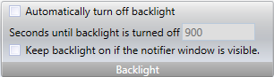 |
Select to automatically turn off the backlight after a certain number of seconds, and whether to keep the backlight on if a notifier window (e.g. alarm indicator or communication error message) is visible.
Backlight settings are supported only for HMI panel targets. For other targets, the Microsoft Windows screen saver may be used.
Serial Ports Group
For each of the COM ports, select if it is to be configured as an RS-232, RS-422 or RS-485 port. Only available when an HMI panel is selected as target.
The number of available ports and possible configuration differ depending on selected target.
For example, on X2 base, iX TxB, iX TxC, and IPC, four COM ports can be configured:
| 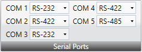 |
Note
When running 2xRS-485 (COM 2 and COM 3) the serial ports are switched. COM 2 runs on COM B(2) and COM 3 runs on COM A(1).
Servers Group
The Servers group contains the FTP, Web Server, OPC UA Server and Remote Access commands. The FTP and Remote Access commands are only available when an HMI panel is selected as target.
It is highly recommended to set a password when enabling a server, especially when it is exposed to the internet. To get high security on the password, it must include upper and lowercase letters, numbers and special characters.
FTP
When enabled, it is possible to upload/download files to/from the HMI panel provided that there is an FTP client program in the development PC, e.g. Internet Explorer, Windows Commander or some other standard FTP program.
It is possible to set up access to the FTP server with login requirements and/or as anonymous. An anonymous user has read-only access rights. A user that logs in with the correct user name and password gets read/write access rights.
It is possible to allow access to an SD card or a USB stick used in the target. If multiple USB sticks are used in the target, only the first one can be accessed.
FTP is only available when an HMI panel is selected as target. The functionality is not supported by iX TxC and PC.
Username and password is only supported in Western European languages.
Remote Access
The Remote Access function makes it possible to access, reflect and control an HMI panel from a PC by using the free VNC client program Remote Access Viewer together with the built-in VNC server in the HMI panel.
It is possible to set up Remote Access with a view only password and/or a full access password. The view only password allows reflecting the panel remotely; the full access password allows also control of maneuverable objects in the panel.
The maximum length of the password is eight characters according to the VNC standard.
Only one VNC client can connect to the VNC server. Only available when an HMI panel is selected as target.
To protect secrecy when entering a password via Remote Access Viewer, it is recommended to use the PC keyboard. Otherwise it is possible that the cursor on the remote HMI panel displays which keys are pressed on the alphanumeric keyboard.
When a panel is remotely controlled, it will beep as if it was touched.
For more information about Remote Access, refer to the documentation for Remote Access and Remote Access Viewer.
Web Server
Enables the possibility to host project files for a web client.
| 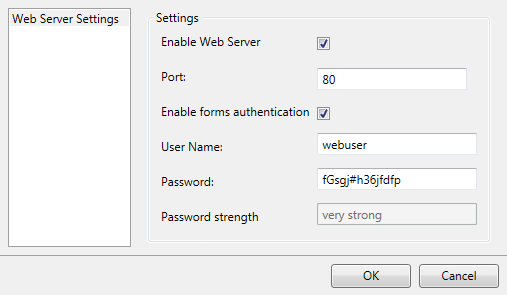 |
Parameter | Description |
|---|---|
Enable Web Server | Click this check box to enable the web server. |
Port | Enter a server port number. |
Enable forms authentication | Click this check box to enable forms authentication and enter user name and password. The password can be any alphanumeric string. The passwords minimum length is four characters and the maximum length is 20 characters. |
Related information |
|---|
OPC UA Server
Enables the possibility to publish tags with an OPC UA Server.
Parameter | Description |
|---|---|
Enable OPC UA Server | Click this check box to enable the OPC UA server. |
Port | Enter a server port number. |
Allow anonymous login | Click this check box to enable anonymous login. For a secured login enter user name and password and leave the check box unchecked. |
Expose tag names as OPC UA node identifier | Click this check box to enable the use of tags names instead of a unique number in the published OPC UA node identifier of each tag. Switching this setting or changing tags names with this setting active will require updating previous integrations using OPC UA since the Node Identifier to address the tags will change. |
Tag visibility | Available options:
|
Tag default visibility | Determines the initial visibility value for new tags. This option is only available when Tag visibility is set to Customized. |
Allow deprecated security policies | Click this to allow deprecated security policies for backward compatibility. If this is set and user name and password is used as authentication method, a deprecated security policy (http://opcfoundation.org/UA/SecurityPolicy#Basic256) will be used as default security policy instead of more secure security policies. |
The Tags editor displays the fVisible column when the Tag visibility option is set to Customized.
| 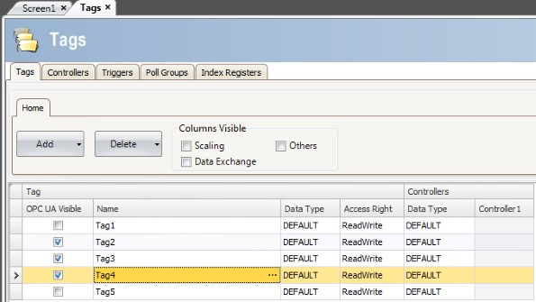 |
Address space
All tags, except array tags, defined in project will be shown.
The tags will be put in a folder named Tags in Namespace TagProvider on the server.
The NodeClass of all tags will be Variable. All tag values will be published scaled with the offset and gain of the tag.
Tag Properties Mapping
Parameter | Description |
|---|---|
Tag property | UA Server Attribute |
Name | DisplayName / BrowseName |
Data Type | DataType |
Access Right | AccessLevel / UserAccessLevel |
Description | Description |
Poll Group Interval | MinimumSamplingInterval |
Note
Data type BIT is not supported by OPC UA. Tags of this type will be handled as INT16 type in the server. For best result, use BOOL type instead.
Certificate
A certificate will be auto generated and self-signed when the server first starts up. The certificate will be valid for 20 years.
The certificate contains no IP address since this could change after the certificate has been generated.
Limitations
Limitation | Description |
|---|---|
Discovery | Not supported |
Encoding / Transport | Only UA TCP Binary |
User authentication | Only user name / password Only one account |
Security | No encryption support |
Sessions | The maximum number of sessions the server can create is 20. Sessions are terminated after 20 minutes of inactivity (timer is reset if the server is restarted). |
Related information |
|---|
Output Devices Group
Printer devices can be set up by clicking the Settings control in the Output Devices group.
| 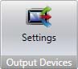 |
Printer Device
USB Printer Connection
When printing from a iX TxC/PC, the default printer in Windows will always be used if USB is selected as Printer Connector.
| 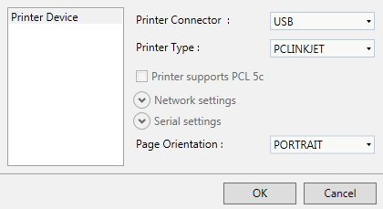 |
Parameter | Description |
|---|---|
Printer Connector | Select USB |
Printer Type | Select printer type. Selection possibilities: PCLINKJET and PCLLASERJET. |
Printer supports PCL 5c | Click this check box if the printer supports the PCL 5c color printer protocol. This option is only available if the printer type is set to PCLLASERJET. |
Network settings | Not available |
Serial settings | Not available |
Page Orientation | Portrait or landscape orientation of the printout |
Ethernet Printer Connection
When printing from a iX TxC/PC, the default printer in Windows will always be used if ETHERNET is selected as Printer Connector.
| 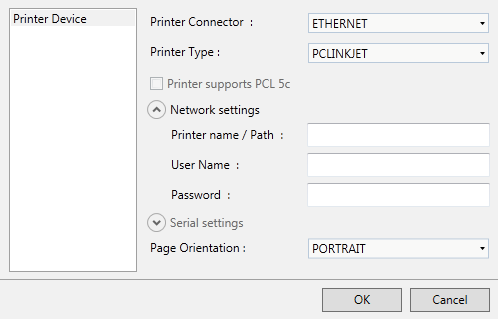 |
Parameter | Description |
|---|---|
Printer Connector | Select Ethernet |
Printer Type | Select printer type. Selection possibilities: PCLINKJET and PCLLASERJET. |
Printer supports PCL 5c | Click this check box if the printer supports the PCL 5c color printer protocol. This option is only available if the printer type is set to PCLLASERJET. |
Network settings | Enter Printer name / path |
Enter user name | |
Enter password | |
Serial settings | Not available |
Page Orientation | Portrait or landscape orientation of the printout |
Serial Printer Connection
When printing from a iX TxC/PC, the data will be sent out on the selected COM port if SERIAL is selected as Printer Connector.
| 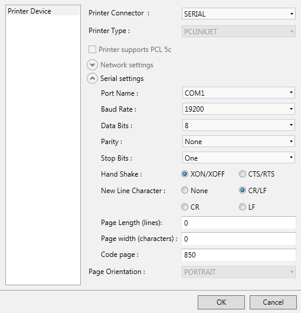 |
Parameter | Description |
|---|---|
Printer Connector | Select Serial |
Printer Type | Not available |
Printer supports PCL 5c | Not available |
Network settings | Not available |
Serial Settings | Port Name: Select which COM-port the printer is connected to |
Baud Rate: Select the baud rate for transmission of data. | |
Data Bits: Select the number of data bits in each character. | |
Parity: Set the parity bit. The parity bit in each character can be set to none , odd, even, mark or space. | |
Stop Bits: Select the number of stop bits to be sent at the end of every character. Selection possibilities: None, One, Two or TwoPointFive. | |
Hand Shake: Select which handshaking protocol to be used. Selection possibilities: XON/XOFF, CTS/RTS. | |
New Line Character: Select end of line character. Selection possibilities: None, CR/LF, CR or LF. | |
Serial Settings | Page Length (lines): Select the number of lines to be printed out before form feed. Form feed will not take place if the page length is set to 0. |
Page Width (characters): Set the page width specified as the maximum characters in a single line of text. | |
Code page: The code page consists ofa table of values that describes the character set for a particular language. The default code page in iX Developer is 850. | |
Page Orientation | Not available |
Printouts via HMI panel
When printing to a serial printer from an HMI panel, the printer must support IBM character set (850).
When printing to a USB printer from an HMI panel, the printer must support PCL levels according to the table below:
Printer type | PCL level requirement |
|---|---|
Color laser printer | USB + PCL 5c |
Monochrome laser printer | USB + PCL 5e |
Color ink-jet printer | USB + PCL 3e |
When printing via Ethernet from an HMI panel, the network printer must be a shared resource in the Windows network.
Connecting a printer via Ethernet requires that a PC is connected between the HMI panel and the printer.
Printing to a color laser printer via Ethernet is not supported for HMI panels. PCL 6 is not supported at all on HMI panels.
Service Menu Group
The Service Menu group provides a possibility to protect the service menu with a pin code.
Parameter | Description |
|---|---|
Pincode | Entera PIN code for the service menu. No pincode enables the service menu for all users. Only numbers (0–9) are allowed. |
Insert Ribbon Tab
The Functions group, available from the Insert ribbon tab, contains functions and screen that can be added to the project.
Functions Group
| 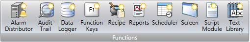 |
All added components are available from Project Explorer folders. The Project Explorer already includes alarm server, multiple languages, security functions and tags. All functions are managed through their configuration pages.
Parameter | Description |
|---|---|
With the text library function, text tables can be created, where values are linked to texts. | |
Data can be logged and saved toa database on time intervals or depending on changed values. | |
Alarms can be distributed between HMI panels, with notification via printer, SMS or e-mail using the alarm distributor. | |
A script module can be included to program features not covered by included functions and actions, or to be used to share functionality among functions. | |
Several recipes can be inserted in the project. Each recipe function handles a pre-defined set of recipe items. | |
Function keys for HMI panels as well as for the regular PC keyboard can be configured. | |
A scheduler can be used to control events in the process at special times. | |
The Audit Trail function enables tracking of operator actions. | |
The reports function allows adding Excel report templates to the project. | |
The Screen control adds new screens to the current project. |
Related information |
|---|
View Ribbon Tab
The Windows group, available from the View ribbon tab, contains controls to toggle visibility of the tool windows:
Windows Group
| 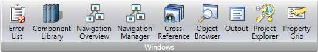 |
The tool controls in the Windows group are highlighted when active.
Tool window | Description | Default Position |
|---|---|---|
Shows all screens and components included in the application | Docked to the left part of the application window | |
Displays detailed information concerning the project validation and build | Docks to the lower part of the application window | |
Provides an overview of where a specific tag is used | Docks to the right part of the application window | |
Displays information about problems and errors detected during build | Docks to the lower part of the application window | |
Provides an overview of all screens included in the project, with zooming facilities. | Floating window | |
Manages screens and screen navigation | Desktop area | |
Shows detailed properties of a selected screen or object | Docks to the right part of the application window as a tab | |
Displays an overview of all objects in the current screen and enables setting visibility and locking objects easily, as well as placing objects in front or back of each other. | Floating window | |
Contains predefined as well as user-defined graphical components | Docks to the right part of the application window as a tab |
Dynamics Ribbon Tab
The Dynamics ribbon tab includes the following groups:
The controls on the Dynamics tab are used to change the properties of an object depending on a changed tag value.
A lock icon resembling a chain indicates that a specific dynamic setting is made for the selected object.
If, for example, dynamic fill settings are made, it is not possible to make fill settings for the object from the Format group on the Home tab.
Note
Security has higher priority than dynamics. Visibility has higher priority than blink.
Note
Scripting to a property for which Dynamics has been configured disables the dynamic settings.
To release an object from a dynamic control, click the control with the lock icon and click Clear Dynamics in the appearing dialog.
Layout Group
Move
The Move control in the Position group changes an object’s position, based ona tag value.
Position coordinates on the screen are given in pixels of the screen resolution. The position 0,0 corresponds to the upper left corner of the screen.
To move an object vertically when a tag value changes:
Draw and position the object at the start position. Keep the object selected.
Click on Move on the Dynamics tab to open the Move Dynamics Editor.
Select the tag to control the movement.
Enter a start and end value for the tag.
Start and end positions are suggested based on the current start position. A ghost object will appear at the suggested finish position. A guide line that connects the center of the original object with the ghost object appears.
Move the ghost object in the screen to its final position.
The coordinates for the object is updated. An animation of the move appears on the screen. Coordinate values can also be updated directly in the numerical fields (End Top, End Left). The coordinates for start and finish will limit the movement of the object irrespective if the tag value is outside its start and end value.
Click OK to save and close the Move Dynamics Editor.
| 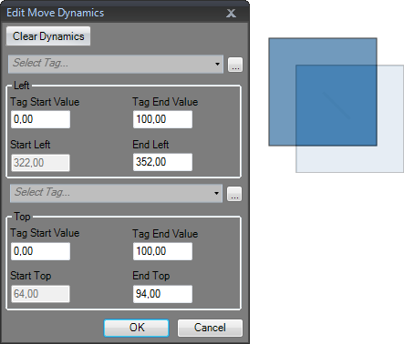 |
When Position or Size dynamics is applied, moving or resizing of the object will be disabled. A lock icon resembling a chain in the upper left corner of the object (when selected) indicates that the object has a dynamic control applied and that it cannot be moved or resized.
Size
The Size control in the Size group changes an object’s size, based ona tag value.
Dynamic resizing of external picture files may result in a resolution loss if the picture is enlarged to a size larger than what is used elsewhere in the current project.
Width and height of an object are given in pixels of the screen resolution. To resize the width of an object when a tag value changes:
Draw and size the object at its start size. Keep the object selected.
Click on Size on the Dynamics tab to open the Resize Dynamics Editor.
Select the tag to control the resizing.
Fill in the values that for start and finish. Size is given in screen resolution pixels.
Start size is suggested based on the current start size. A finish size is suggested as a fixed increase of the start size horizontally and vertically. A ghost object will appear with the finish size.
The object can only be resized from left to right and top to bottom.
Resize the ghost object in the screen to its final size.
The coordinates for the object is updated. An animation of the resizing appears on the screen. Coordinate values can also be updated directly in the numerical fields (End Width, End Height). The coordinates for start and finish will limit the size of the object irrespective if the tag value is outside its start and end value.
Click OK to save and close the Resize Dynamics Editor.
When Position or Size dynamics is applied, moving or resizing of the object will be disabled. A lock icon resembling a chain in the upper left corner of the object (when selected) indicates that the object has a dynamic control applied and that it cannot be moved or resized.
Color Group
The Fill and Outline controls in the Color group change an object’s fill color or outline (border) color, based on a tag value.
To alter the fill color of an object when a tag value changes:
Draw the object. Keep the object selected.
Click on Fill on the Dynamics tab to open the Color Dynamics Editor.
Select the tag that is to control the color.
Fill in values to trigger color change.
Select color and gradient from the color menu.
Click OK to save and close the Color Dynamics Editor.
| 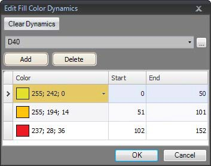 |
General Group
Visibility
The Visible control in the Visibility group determines if an object is to be displayed in the screen or not, based on a tag value.
To hide an object when a tag value changes:
Draw the object. Keep the object selected.
Click on Visible on the Dynamics tab.
Select the tag that is to control visibility. The object will be visible on the screen at a certain tag value.
The selected value will be treated as True (visible). All other values will be treated as False (invisible).
Blink
It is possible to select a tag to enable blinking depending on the tag’s current value.
The selected value will be treated as True (blink enabled). All other values will be treated as False (blink disabled).
The blink interval can be set dynamically or constantly.
| 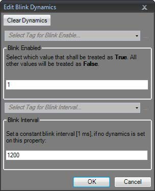 |
Note
Security has higher priority than dynamics. Visibility has higher priority than blink.
Related information |
|---|
General
The general control offers a possibility to alter the properties of objects in iX Runtime.
Converter Operators
Converter operators are used to alter the properties of the objects. The converter operators can be selected from the Edit general dynamics dialog.
Parameter | Description |
|---|---|
Bool Converter | Converts 0 to false and all other values to true. |
Color Converter | Converts value intervals to specified colors. |
Linear Converter | Converts values according to the linear equation. |
Raw Converter | Converts the value to a new value matching the target type. |
Text Library Group converter | Converts a value to a text. |
Edit General Dynamics
The Edit general dynamics dialog contains different properties depending on which object is selected. The dialog is accessed by clicking the General control on the General group.
| 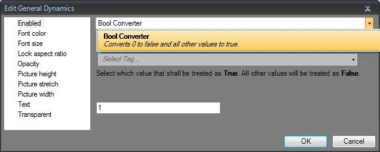 |
Parameter | Converter | Object | Description |
|---|---|---|---|
3D View | ·bool | Chart | Set a 3D look and feel for the chart. |
Acknowledge all | ·bool | Alarm viewer | Set visibility for the Acknowledge All button. |
Acknowledge Visible | ·bool | Alarm viewer | Set visibility for the Acknowledge Visible button. |
Acknowledge Selected | ·bool | Alarm viewer | Set visibility for the Acknowledge Selected button. |
Address | ·raw ·text library group | Web browser | Change the default URL. |
Alternate background color | ·color interval | Animated label | Set background color. |
Alternate foreground color | ·color interval | Animated label | Set foreground color. |
Animation speed | ·linear | Animated label | Set animation speed. |
Auto-size | ·bool | Resize the object according to the size of the default text string length and font size. | |
Button color | ·color interval | Alarm viewer | Set the button color |
Button height | ·raw ·linear | Alarm viewer | Set the height of the buttons. |
Button width | ·raw ·linear | Alarm viewer | Alter the width of the buttons. |
Parameter | Converter | Object | Description |
|---|---|---|---|
Clear | ·bool | Alarm viewer | Set visibility for the Clear button. |
Clear Visible | ·bool | Alarm viewer | Set visibility for the Clear Visible button. |
Clockwise | ·bool | Circular meter | Set the rotation orientation. |
Column header color | ·color interval | Set the column header background color. | |
End angle | ·raw ·linear | Circular meter | Set the end angle. |
PDF-file | ·raw ·text library group | PDF viewer | Select PDF file to add to the PDF viewer. |
Filter | ·bool | Alarm viewer | Set visibility for the filter button. |
Font color | ·color interval | Set font color in for instance the text object. | |
Font size | ·raw ·linear | Set font size in for instance the text object. | |
Group background | ·color interval | Action menu | Set the group background color. |
Group foreground | ·color interval | Action menu | Set the group foreground color. |
Header | ·raw ·text library group | Chart | Set the header. |
High Region Color | ·color interval | Circular meter | Set the high region color. |
High Region Max | ·raw ·linear | Circular meter | Set the maximum value of the high region indicator. |
High Region Min | ·raw ·linear | Circular meter | Set the minimum value of the high region indicator. |
Indicator color | ·color interval | Set the indicator color in for instance the circular meter object. | |
Info | ·bool | Alarm viewer | Set visibility for the info button. |
Active | ·bool | Chart | Activate or stop the data input. |
Enabled | ·bool | Enable or disable an object. | |
Show header | ·bool | Chart | Set visibility for the header. |
Show legend | ·bool | Chart | Set visibility for the legend. |
Parameter | Converter | Object | Description |
|---|---|---|---|
Read only | ·bool | Control whether for instance an analog numeric object editable or not. | |
Auto-scale X-axis | ·bool | Chart | Used with the chart object to toggle whether iX Runtime automatically should calculate the minimum and maximum X Axis values or not. |
Show X-axis grid | ·bool | Chart | Set visibility for the X Axis grid. |
Show X-axis | ·bool | Chart | Set visibility for the X Axis. |
Auto-scale Y1-axis | ·bool | Chart | Used with the chart object to toggle whether iX Runtime automatically should calculate the minimum and maximum Y1 Axis values or not. |
Show Y1-axis grid | ·bool | Chart | Set visibility for the Y1 Axis grid. |
Show Y1-axis | ·bool | Chart | Set visibility for the Y1 Axis. |
Auto-scale Y2-axis | ·bool | Chart | The bool converter can be used with the chart object to toggle whether iX Runtime automatically should calculate the minimum and maximum Y2 Axis values or not. |
Show Y2-axis grid | ·bool | Chart | Set visibility for the Y2 Axis grid. |
Show Y2-axis | ·bool | Chart | Set visibility for the Y2 Axis. |
Lock aspect ratio | ·bool | Multi picture | Used with the multi picture object to toggle the height/width ratio of the object. |
Low region color | ·color interval | Circular meter | Set the low region color. |
Low region max | ·raw ·linear | Circular meter | Set the maximum value of the low region indicator. |
Low region min | ·raw ·linear | Circular meter | Set the minimum value of the low region indicator. |
Major ticks | ·raw ·linear | Set the number of labeled time marks in for instance the linear meter object. | |
Maximum | ·raw ·linear | Set the end value of the scale in for instance the linear meter object. |
Parameter | Converter | Object | Description |
|---|---|---|---|
Major value tics | ·raw ·linear | Trend viewer | Set the number of labeled scale marks on the scale. |
Max value | ·raw ·linear | Trend viewer | Set the end value of the scale. |
Min value | ·raw ·linear | Trend viewer | Set the start value of the scale. |
Minor value ticks | ·raw ·linear | Trend viewer | Set the number of scale ticks between two adjacent major ticks on the scale. |
Medium region color | ·color interval | Circular meter | Set the medium region color. |
Medium region max | ·raw ·linear | Circular meter | Set the maximum value of the medium region indicator. |
Medium region min | ·raw ·linear | Circular meter | Set the minimum value of the medium region indicator. |
Minimum | ·raw ·linear | Set the start value of the scale in for instance the linear meter object. | |
Minor ticks | ·raw ·linear | Set the number of scale ticks between two adjacent major ticks. | |
Lower limit | ·raw ·linear | Analog numeric | Set the minimum value that can be entered. |
Opacity | ·raw ·linear | Set the opacity of for instance the PDF viewer object. | |
Outline thickness | ·raw ·linear | Set the outline thickness of for instance the rectangle object. | |
Picture height | ·raw ·linear | Button | Set picture height. |
Picture name | ·raw ·text library group | Picture | Set the picture shown in the picture object. |
Picture stretch | ·bool | Button | Stretch a picture. |
Picture width | ·raw ·linear | Button | Set the picture width. |
Play/Pause | ·bool | Alarm viewer | Set visibility for the pause button. |
Parameter | Converter | Object | Description |
|---|---|---|---|
Prefix | ·raw ·text library group | Analog numeric | Set a prefix to the digits entered. |
Radius X | ·raw ·linear | Rectangle | Set the radius of the X axis in the rectangle object. |
Radius Y | ·raw ·linear | Rectangle | Set the radius of the Y axis. |
Scale color | ·color interval | Circular meter | Set the scale color. |
Scale | ·bool | Circular meter | Set visibility for the scale. |
Selected background | ·color interval | Action menu | Set the background color of the selected action. |
Selected foreground | ·color interval | Action menu | Set the foreground color of the selected action. |
Selected group background | ·color interval | Action menu | Set the background color of the selected menu group. |
Selected group foreground | ·color interval | Action menu | Set the foreground color of the selected menu group. |
Separator color | ·color interval | Set the separator color. | |
Source | ·raw ·text library group | Media player | Set the source file. |
Start angle | ·raw ·linear | Circular meter | Set the start angle. |
Stretch | ·bool | Adjust the height and width to the selection frame in for instance the picture object. | |
Suffix | ·raw ·text library group | Analog numeric | Set a suffix to the digits entered in the analog numeric object. |
Text | ·raw ·text library group | Set the text shown in for instance the text object. | |
Title | ·raw ·text library group | Roller panel | Set the title. |
Title background color | ·color interval | Roller panel | Set the title background color. |
Title foreground color | ·color interval | Roller panel | Set the title foreground color. |
Transparent | ·bool | Set the transparency of for instance the button object. |
Parameter | Converter | Object | Description |
|---|---|---|---|
Upper limit | ·raw ·linear | Analog numeric | Set the maximum value that can be entered. |
Value | ·raw ·linear | Progress bar | Set the value. |
X1 | ·raw ·linear | Line | Set the X1 pixel coordinates |
X2 | ·raw ·linear | Line | Set the X2 pixel coordinates |
X3 | ·raw ·linear | Line | Set the X3 pixel coordinates |
X4 | ·raw ·linear | Line | Set the X4 pixel coordinates |
X-axis grid color | ·color interval | Chart | Set the grid color of the X axis. |
X-axis max value | ·raw ·linear | Chart | Set the maximum value of the X axis. |
X-axis min value | ·raw ·linear | Chart | Set the minimum value of the X axis |
Y1-axis grid color | ·color interval | Chart | Set the grid color of the Y1 axis. |
Y1-axis max value | ·raw ·linear | Chart | Set the maximum value of the Y1 axis. |
Y1-axis min value | ·raw ·linear | Chart | Set the minimum value of the Y1 axis. |
Y2-axis grid color | ·color interval | Chart | Set the grid color of the Y2 axis. |
Y2-axis max value | ·raw ·linear | Chart | Set the maximum value of the Y2 axis. |
Y2-axis min value | ·raw ·linear | Chart | Set the minimum value of the Y2 axis. |
Related information |
|---|
General Ribbon Tab
The General ribbon tab contains different property groups and controls for different objects. Appearance can be modified for graphical shapes and objects. Scale settings can be made for meters and trend viewers. Additional settings can be made for some objects.
The Tag/Security group is available also on the Home ribbon tab. The general properties are described separately for each object.
Related information |
|---|
HMI Controls in the Objects group |
Media Controls in the Objects group |
Special Controls in the Objects group |
Windows Controls in the Objects group |
Actions Ribbon Tab
Actions can be triggered in various ways, for example by clicking a button. The Actions tab controls are used to define actions for objects. Alternatively, a script can be used to trigger an action.
An action is something that is performed, for example closing a screen. An action trigger is the act that generates an action, for example clicking a button.
The Actions ribbon tab contains different control groups for different objects.
A Click action configured for a button
Note
It is not recommended to use multiple trigger methods, as this may lead to undesired behavior. It is recommended either to use a script or to program actions with the controls in the Actions tab. For example, avoid using Click Action Trigger in combination with Mouse Button Action Triggers.
Related information |
|---|
Click Action Trigger
Most objects can be assigned click actions, that will be executed when the object is clicked in runtime.
Mouse Button Action Triggers
The Mouse Down and Mouse Up action triggers can be used to create two-step actions when clicking with the left mouse button on an object.
Parameter | Description |
|---|---|
Mouse Down | A Mouse Down action will be performed when the left mouse button is pressed down on the object in runtime. |
Mouse Up | A Mouse Up action will be performed when the left mouse button is released from the object in runtime. |
Parameter | Description |
|---|---|
Mouse Enter | A Mouse Enter action will be performed when the cursor enters the boundaries of an object in runtime. |
Mouse Leave | A Mouse Leave action will be performed when the cursor leaves the boundaries of an object in runtime. |
The object boundaries are not adapted to the visible outline of the shape for any target types except for PC and iX TxC. Instead the active area of the object is extended to a rectangular box. This will result in a mouse action as soon as the mouse pointer is placed inside the rectangular bounding box of the object:
| 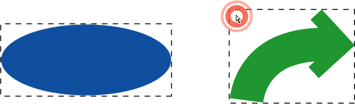 |
Function Key Action Triggers
The Key Down and Key Up action triggers can be used to create two-step actions for function keys.
Parameter | Description |
|---|---|
Key Down | A Key Down action will be performed when a function key is pressed in runtime. |
Key Up | A Key Up action will be performed whena function key is released in runtime. |
Value Changed Action Triggers
Parameter | Description |
|---|---|
Input Value Changed | The Input Value Changed action will be performed when a value is entered by the operator. |
Value Changed | The Value Changed action will be performed when the value of the object has changed. |
Tags Action Triggers
Parameter | Description |
|---|---|
Value Changed (tag will always be active) | The tag will always be active. |
Value Changed (tag will be polled as needed) | The event will only trigger if the tag is active. The tag can be deactivated if it is not in use by anything else. When the tag is deactivated the event will remain idle until the tag is activated. |
Focus Action Triggers
Parameter | Description |
|---|---|
Got Focus | The Got Focus action will be performed when the object is selected. |
Lost Focus | The Lost Focus action will be performed when the object is no longer selected. |
Navigation Action Triggers
Parameter | Description |
|---|---|
Navigated | The Navigated action will be performed when having navigated to the address entered in the address field of the Web browser object. |
Navigating | The Navigating action will be performed when having entered, but not reached, an address in the address field of the Web browser object. |
Data Logger Action Triggers
The LogItemValueChanged and LogValuesUpdated are available for the Data Logger.
Alarm Server Action Triggers
Alarm server actions can be configured for the entire alarm server, for alarm groups or for individual alarm items. The actions will be activated upon alarm status changes.
Action Groups
Actions are divided into action groups.
Action Group | Action | Description | |||||||||||||||||||||||||||||||||||||||||||||||
|---|---|---|---|---|---|---|---|---|---|---|---|---|---|---|---|---|---|---|---|---|---|---|---|---|---|---|---|---|---|---|---|---|---|---|---|---|---|---|---|---|---|---|---|---|---|---|---|---|---|
Screen | Close Screen | Closes the current screen If triggered from a tag in a popup screen, this will close both the popup and the parent screen. | |||||||||||||||||||||||||||||||||||||||||||||||
Print Screen | Prints the current screen on printer or to a .PNG file. Selecting Print to file enables the following options: Project files folder: The file will be saved in a folder named “Project Files” in the projects execution path. Browse: A save dialog will be shown in runtime. (PC only). Path: The file will be saved to a specified path. (PC only). If the Enable FTP Friendly Names functionality has been enabled in the Advanced Project Settings, any spaces and dots in the filename will be replaced according to Enable FTP Friendly Names. | ||||||||||||||||||||||||||||||||||||||||||||||||
Show Next Screen | Shows next screen. | ||||||||||||||||||||||||||||||||||||||||||||||||
Show Previous Screen | Returns to previous screen. | ||||||||||||||||||||||||||||||||||||||||||||||||
Show Screen | Shows the specified screen. If the screen is a popup the position of the screen can be defined by entering (X,Y) coordinates. | ||||||||||||||||||||||||||||||||||||||||||||||||
Show Start Screen | Shows the screen set to Startup screen. | ||||||||||||||||||||||||||||||||||||||||||||||||
Address Book | Open Address Book | Opens the address book for editing. This action is used for Alarm Distributor purposes. | |||||||||||||||||||||||||||||||||||||||||||||||
Alarm Distributor Server | Open Print Settings | Modifies alarm distributor print settings. | |||||||||||||||||||||||||||||||||||||||||||||||
Open Routes Configuration | Modifies routes for the distributed alarm server. | ||||||||||||||||||||||||||||||||||||||||||||||||
Alarm Viewer[a] | Acknowledge All Alarms | Acknowledges all alarms in all Alarm Viewers. | |||||||||||||||||||||||||||||||||||||||||||||||
Acknowledge Visible Alarms | Acknowledges only visible alarms on associated alarm viewer control. | ||||||||||||||||||||||||||||||||||||||||||||||||
Acknowledge Selected Alarm | Acknowledges the selected alarm in the Alarm Viewer. | ||||||||||||||||||||||||||||||||||||||||||||||||
Alarm Info | Performs the action configured for the Alarm event info requested in the Alarm Server. The action is performed on the selected Alarm Viewer. | ||||||||||||||||||||||||||||||||||||||||||||||||
Clear All Alarms | Remove all alarms in all Alarm Viewers. | ||||||||||||||||||||||||||||||||||||||||||||||||
Clear Visible Alarms | Removes only visible alarms on associated alarm viewer control. | ||||||||||||||||||||||||||||||||||||||||||||||||
Filter Alarms | Shows the filter configuration dialog for the selected Alarm Viewer. | ||||||||||||||||||||||||||||||||||||||||||||||||
Pause Viewer | Starts and pauses the selected Alarm Viewer. | ||||||||||||||||||||||||||||||||||||||||||||||||
Enable/Disable selected Alarm | Toggles the enable status of the selected alarm in the viewer. | ||||||||||||||||||||||||||||||||||||||||||||||||
Manage Alarms | Manage enable status of alarms in a popup window. | ||||||||||||||||||||||||||||||||||||||||||||||||
Chart | Pan Down | Pans down in selected chart. | |||||||||||||||||||||||||||||||||||||||||||||||
Pan Left | Pans left in selected chart. | ||||||||||||||||||||||||||||||||||||||||||||||||
Pan Right | Pans right in selected chart. | ||||||||||||||||||||||||||||||||||||||||||||||||
Pan Up | Pans up in selected chart. | ||||||||||||||||||||||||||||||||||||||||||||||||
Reset View | Resets any panning and zoom in selected chart. | ||||||||||||||||||||||||||||||||||||||||||||||||
Zoom In | Zooms into selected chart. | ||||||||||||||||||||||||||||||||||||||||||||||||
Zoom Out | Zooms out of selected chart. | ||||||||||||||||||||||||||||||||||||||||||||||||
Database | Back Up Databases | Backup one or many databases. | |||||||||||||||||||||||||||||||||||||||||||||||
Restore databases | Restore one or many databases. | ||||||||||||||||||||||||||||||||||||||||||||||||
Database Cleanup | Removes empty space and runs a defragmentation of the database. This reduces the database size and optimizes performance. | ||||||||||||||||||||||||||||||||||||||||||||||||
Database Export | Exports selected database in csv format. | ||||||||||||||||||||||||||||||||||||||||||||||||
Datalogger | Clear Datalogger | Clears the specified datalogger. | |||||||||||||||||||||||||||||||||||||||||||||||
Log Once | Makes the specified datalogger log once. | ||||||||||||||||||||||||||||||||||||||||||||||||
Start Logging | Enables the specified datalogger. | ||||||||||||||||||||||||||||||||||||||||||||||||
Stop Logging | Disables the specified datalogger. | ||||||||||||||||||||||||||||||||||||||||||||||||
Output Devices | Email Configuration | Shows the e-mail configuration page. This action is used for Alarm Distributor purposes. | |||||||||||||||||||||||||||||||||||||||||||||||
Printer Configuration | Shows the printer configuration page. | ||||||||||||||||||||||||||||||||||||||||||||||||
SMS Configuration | Shows the SMS configuration page. This action is used for Alarm Distributor purposes. | ||||||||||||||||||||||||||||||||||||||||||||||||
Recipe | Delete Recipe | Deletes recipe. | |||||||||||||||||||||||||||||||||||||||||||||||
End Offline Recipe Editing | Sets the tags in the specified recipe in online mode. | ||||||||||||||||||||||||||||||||||||||||||||||||
Export Recipe | Exports a recipe to a .CSV file If the Enable FTP Friendly Names functionality has been enabled in the Advanced Project Settings, any spaces and dots in the filename will be replaced according to Enable FTP Friendly Names. | ||||||||||||||||||||||||||||||||||||||||||||||||
Import Recipe | Imports a recipe from a .CSV file. | ||||||||||||||||||||||||||||||||||||||||||||||||
Load Recipe | Loads recipe. | ||||||||||||||||||||||||||||||||||||||||||||||||
Save Recipe | Saves recipe. | ||||||||||||||||||||||||||||||||||||||||||||||||
Start Offline Recipe Editing | Sets the tags in the specified recipe in offline mode. | ||||||||||||||||||||||||||||||||||||||||||||||||
Reporting | Generate Report | Generates a report file that can be output to a printer or saved as an Excel file. If multiple reports are to be generated, then these actions should be queued up and not run in parallel since this operation can consume a considerable amount of memory. Selecting “File” enables the following options: Project files folder: The file will be saved in a subfolder named ”Reports” in the “Project Files” folder. Browse: A save dialog will be shown in runtime. (PC only). Path: The file will be saved to a specified path. (PC only). If the Enable FTP Friendly Names functionality has been enabled in the Advanced Project Settings, any spaces and dots in the filename will be replaced according to Enable FTP Friendly Names. | |||||||||||||||||||||||||||||||||||||||||||||||
Security | Export User Accounts | Exports user data to a location that the operator states. | |||||||||||||||||||||||||||||||||||||||||||||||
Import User Accounts | Imports user data from a location that the user states. | ||||||||||||||||||||||||||||||||||||||||||||||||
Login | Displays a login dialog. | ||||||||||||||||||||||||||||||||||||||||||||||||
Logout | Logs out the current user. | ||||||||||||||||||||||||||||||||||||||||||||||||
Show Users Dialog | Displays a dialog where users can be added, edited or removed. | ||||||||||||||||||||||||||||||||||||||||||||||||
Tag | Clear Non-Volatile Values | Clears all stored values for tags marked as non-volatile. | |||||||||||||||||||||||||||||||||||||||||||||||
Decrement Analog[b] | Decrements tag value. | ||||||||||||||||||||||||||||||||||||||||||||||||
Increment Analog[b] | Increments tag value. | ||||||||||||||||||||||||||||||||||||||||||||||||
Reset Tag[b] | Resets tag to 0. | ||||||||||||||||||||||||||||||||||||||||||||||||
Set Analog[b] | Sets tag to the specified value. | ||||||||||||||||||||||||||||||||||||||||||||||||
Set String[b] | Sets tag to the specified string. | ||||||||||||||||||||||||||||||||||||||||||||||||
Set Tag[b] | Sets tag to 1. | ||||||||||||||||||||||||||||||||||||||||||||||||
Toggle Tag[b] | Toggles tag between 0 and 1. | ||||||||||||||||||||||||||||||||||||||||||||||||
Trend Viewer | Show Trend Viewer Legend | Displays the legend tool in the selected trend viewer, with a possibility to show and hide curves and to display values of a specific trend viewer sample. | |||||||||||||||||||||||||||||||||||||||||||||||
Trend Viewer History | The Trend Viewer History action includes the following choices (all applicable to the selected trend viewer): On: Shows trend history from when the action was triggered (including offset settings made using trend viewer dynamics). Off: Returns to showing real time trend viewer data. Toggle: Allows entering and terminating history mode using the same object (for example a button). Show Dialog: Lets the user select a period of time, for which to show trend viewer history. | ||||||||||||||||||||||||||||||||||||||||||||||||
Other | Change Active Controllers | Defines which controllers are to be active, OPC UA and OPC Classic controllers requires a restart of the project for changes to take effect. The controller's IsActive property can be changed by script e.g. Globals.Controller1.IsActive = true;, this is not supported for OPC UA and OPC Classic controllers. The controllers ID property (Optional short name for controller) can be read in script. | |||||||||||||||||||||||||||||||||||||||||||||||
Run Script | Executes a script method saved in a script module. | ||||||||||||||||||||||||||||||||||||||||||||||||
Close Application | Closes the runtime application. | ||||||||||||||||||||||||||||||||||||||||||||||||
Copy Debug Log to USB Memory | Copies the debug log to a USB memory. | ||||||||||||||||||||||||||||||||||||||||||||||||
Disable Debug Logger | Disables the debug logger. | ||||||||||||||||||||||||||||||||||||||||||||||||
Enable Debug Logger | Enables the debug logger. | ||||||||||||||||||||||||||||||||||||||||||||||||
Run | Starts an external application | ||||||||||||||||||||||||||||||||||||||||||||||||
Scroll Left | Scrolls the screen carousel object left | ||||||||||||||||||||||||||||||||||||||||||||||||
Scroll Right | Scrolls the screen carousel object right | ||||||||||||||||||||||||||||||||||||||||||||||||
Set Date and Time | Allows changing date and time in the HMI panel | ||||||||||||||||||||||||||||||||||||||||||||||||
Set Language | Sets the language in the HMI panel to the selected language | ||||||||||||||||||||||||||||||||||||||||||||||||
Set Time Zone, Region and Daylight Saving | Allows changing time zone, region and daylight saving settings in the HMI panel | ||||||||||||||||||||||||||||||||||||||||||||||||
Show Backlight Settings | Allows changing backlight settings in the HMI panel When approaching 0% backlight, changes in brightness level may no longer be noticeable in the panel. Complete dimming (to 0%) is only possible to achieve with the marine panel types, such as iX T7AM and iX T15BM. If a panel is restarted, the backlight settings will only be saved if the system tag SystemTagBacklightBrightnessLevel is used in the project and set to non-volatile. | ||||||||||||||||||||||||||||||||||||||||||||||||
Show IP Settings | Shows the IP settings in the HMI panel | ||||||||||||||||||||||||||||||||||||||||||||||||
[a] All Alarm Viewer actions must be associated with an Alarm Viewer in the same screen as the object with the action configured. This also applies to actions that affect all Alarms. | |||||||||||||||||||||||||||||||||||||||||||||||||
Script Action
Script actions are used to execute script methods in script modules, triggered by actions. Script modules in the project can be selected, and for each script module all methods are listed along with their exposed parameters. Static methods are not supported.
| 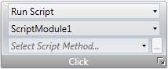 |
To apply a script to a selected object:
Go to the Actions group and select the appropriate action trigger.
Select action Run Script under Other.
Select one of the scripts from Script Modules.
This results in a list of available script methods for that specific script module. Select script method.
The parameters for the script appears in a dialog with information about the parameter name and type. Complete the settings by entering a tag or a fixed value for each parameter, and click OK.
| 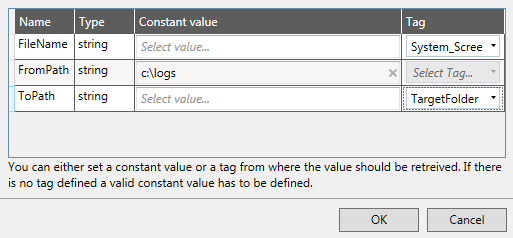 |
The script action will now be executed when the object is triggered.
Note:
Script actions will have precedence over other script code for an object.
Related information |
|---|
Multiple Actions
Multiple actions can be configured by clicking small arrow in the lower right corner of any action group.
Note the small arrow in the lower right corner
The properties window allows configuring and sorting additional actions. The actions available depend of which object is selected in the screen prior to selecting the Actions ribbon tab.
| 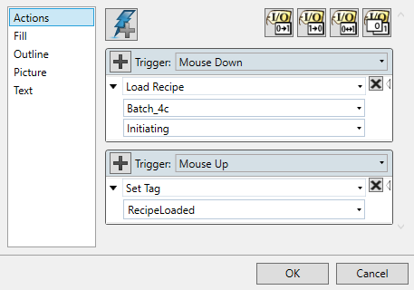 |
After configuring multiple actions, this is indicated for the action group on the Actions tab.
| 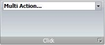 |